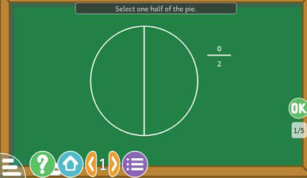

Example
Solution
Use the computer application in the TIE online library https:// tie.go.tz/pages/download-software to divide numbers.


Steps
1.
Open the application for recognizing fractions.
2.
Read clearly the question that appears on the screen.
3.
Write the answer by shading the part of the circle.
4.
Click OK to check your answer.
5.
Do other questions to practice more on recognizing fractions.